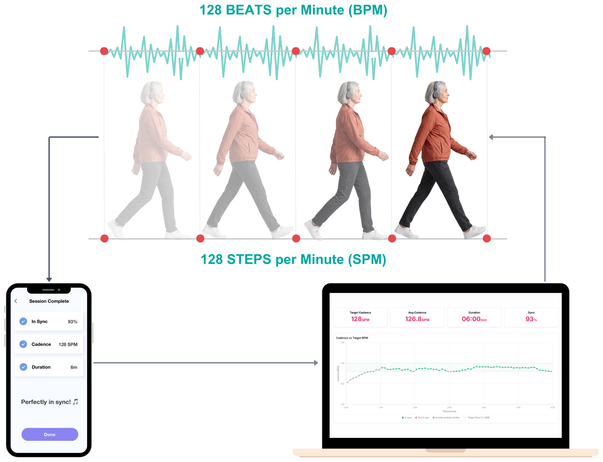
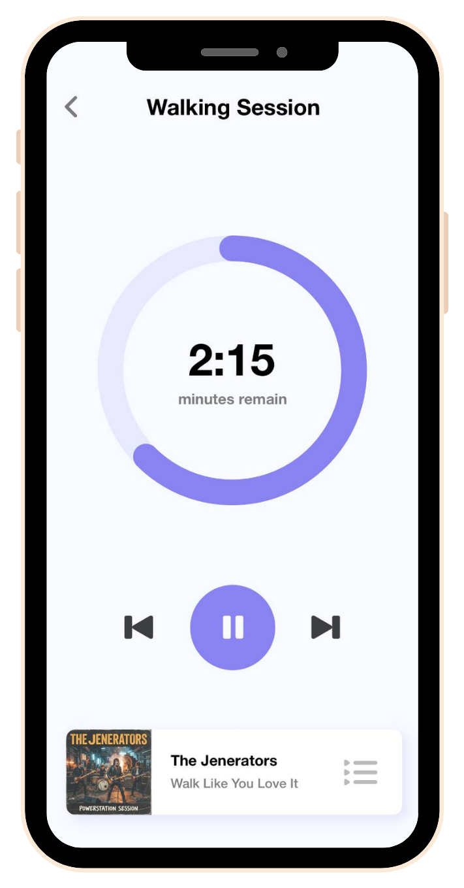

Recovering from a fall
Rebuild confidence and get back to your regular walking.
Music-guided walking app for older adults
Andante uses the rhythm of music people enjoy to set the walking pace. Steps lock onto the beat without effort, and as the tempo gradually rises, their pace follows. Walks feel easier, and people come back for the next one.
No wearables. No extra kit. Just a phone and headphones.
Who it helps
Rebuild confidence and get back to your regular walking.
Keep the walking pace up as it starts to slow.
Stay active and mobile before problems start.
How it works
The Person Walking
Steps fall into time with the music's beat, without effort.
The App
Tracks cadence and how closely steps match the beat in real time, and plays music at the right tempo to guide the pace.
The Dashboard
Practitioners monitor progress remotely and adjust the programme.

The app
Simple enough to use at home.
Built for one-tap use, so people can keep walking between visits.
A programme that keeps progressing.
The tempo rises gradually and their steps follow, building to a challenge when they are ready, at a pace the practitioner sets.
Progress they can see.
Results after every walk and simple graphs over the weeks, to keep them motivated.

The dashboard
Know who needs you.
Flags show who is inactive, cutting walks short, losing sync, or ready for a challenge, so your time goes where it matters.
See what actually happened.
Review any walk in detail: cadence, sync, duration, which songs helped, plus your own notes.
Support your caseload remotely.
Schedule walks and adjust each patient's programme without another visit.
For professionals
Extend your programmes beyond the clinic walls and see who is keeping up at home.
Add a walking programme your carers can offer, simple to follow.
Run a study or pilot with a remote music-based walking programme.
Evidence
Rhythmic Auditory Stimulation (RAS) gives the brain an external timing cue for each step. Hearing and movement are closely linked, so walking steadies without conscious effort.1
In a randomised trial of 134 older adults at increased risk of falling, a six-month music-based multitask training programme cut the fall rate by 54% and fall risk by 39%.2
In a pilot study of healthy older adults, a tempo at or slightly above each person's own cadence worked best, while some fixed tempos made walking less stable.3
A meta-analysis found that listening to music during exercise lowers perceived effort.4
About

Founder
Serial music-tech founder. Brain health senior fellow.

Co-founder
Background across AI, technology and physiotherapy.